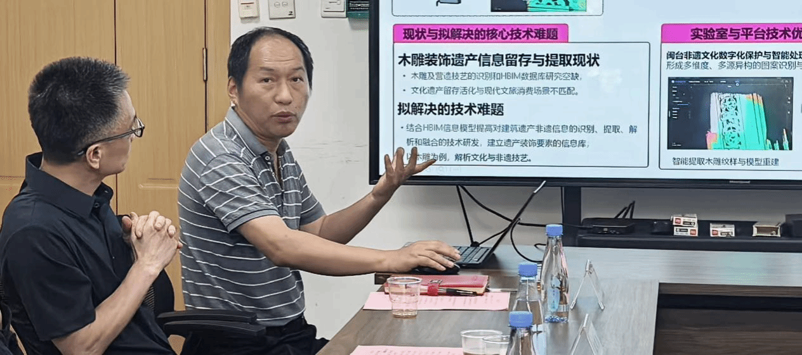
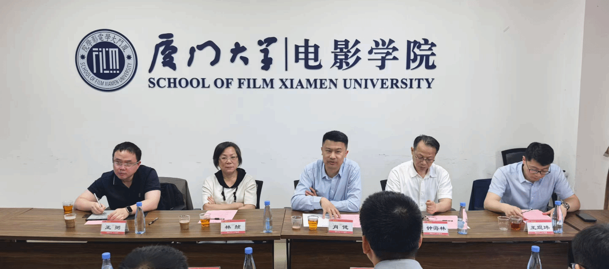
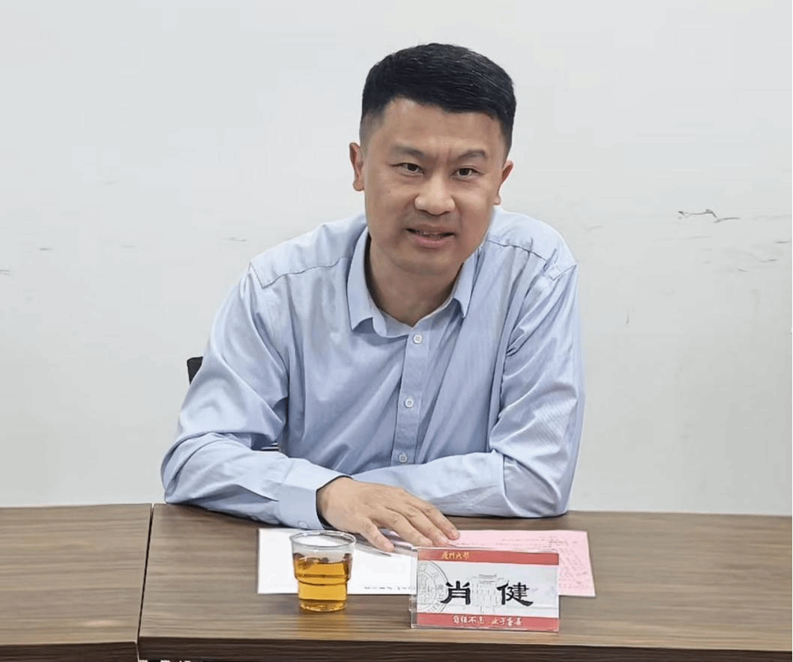
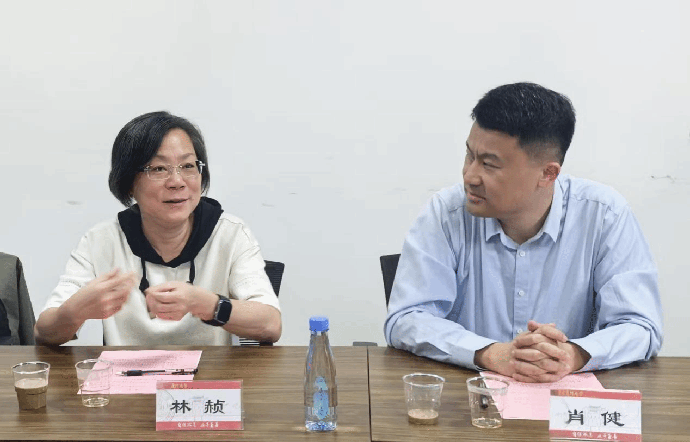
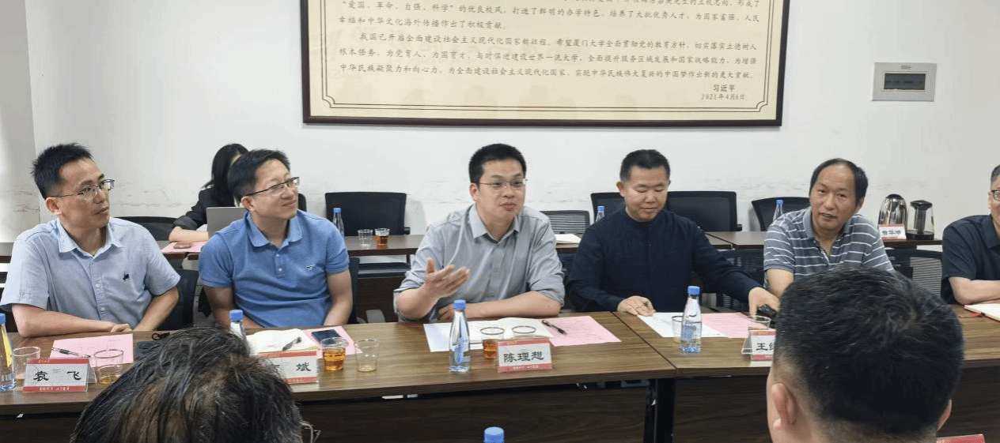
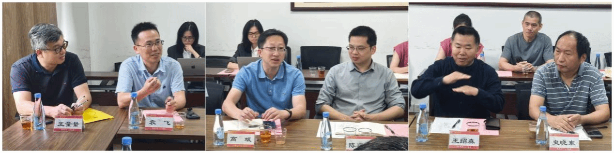
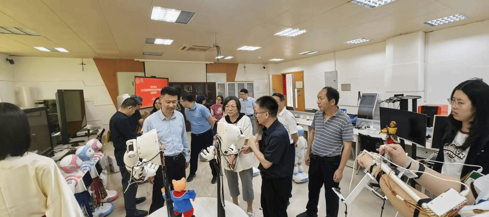

2026年4月27日下午，文化和旅游部科技教育司副司长肖健一行，莅临厦门大学闽台非遗文化数字化保护与智能处理文化和旅游部重点实验室开展调研。文化和旅游部科技教育司信息化处副处长王琨玮，福建省文化和旅游厅科技教育处处长林赪、二级主任科员王弼，厦门市文旅局副局长钟海林，厦门大学科技处处长陈理想，厦门大学建筑与土木工程学院党委书记王绍森，厦门大学电影学院党委书记高斌，厦门大学信息学院副院长袁飞教授，部重实验室主任、信息学院史晓东教授，部重实验室副主任、电影学院姚俊峰教授，部重实验室副主任、建筑与土木工程学院王量量教授，以及电影学院刘昆宏教授，建筑与土木工程学院助理教授陈心怡，部重实验室秘书曾华琳助理教授等参加调研。

图 1 调研座谈会在厦门大学电影学院会议室举行
会议由实验室副主任姚俊峰教授主持。实验室主任史晓东教授作实验室成立五年来发展情况报告，介绍了实验室的建设定位、科研团队，以及两大核心研究方向——闽台非物质文化遗产数字化保护技术、闽台非物质文化遗产智能处理技术，随后从研究项目、论文专著与专利、团队建设、人才培养、开放交流及运行管理等方面展开汇报，重点介绍了实验室取得的多项闽台非遗关键技术突破，包括：闽台非遗数字基因库、闽台建筑数字化建模、建筑技艺数字化解析与元宇宙应用、书画数字化、壁画修复、动画自动生成、非遗技艺数字化仿真、掌中木偶传承创新、智能提线木偶机器人、闽台戏曲唱腔合成、闽南语翻译系统、数字嘉庚、甲骨文破译等。这些成果以数字化和智能处理为手段，为闽台非遗文化的活态传承与发展提供了有效路径，充分展示了实验室在非遗数字化保护与传承领域的技术实力。

图 2 史晓东主任介绍实验室建设与科研成果
随后，与会人员围绕重点实验室建设、“人工智能+文旅”应用展开深入交流讨论。

图 3 与会人员围绕科技赋能文旅深入交流
肖健副司长首先肯定了部重点实验室在科技赋能文旅工作中做出的重要贡献，指出实验室开展了大量扎实工作，有着十分坚实的发展基础。肖副司长介绍，文旅部重点实验室、技术创新中心已列入中央科技委白名单，是文旅科技工作的重要依托。肖副司长明确了科技赋能文旅的重点方向：在技术层面，数字化、人工智能等是当前工作重点；在需求层面，应围绕遗产保护、文物修复、辅助艺术创作、新业态开发、景区治理、市场管理等方面打造可感知的应用场景。在成果转化与推广方面，希望能够形成人工智能在文旅领域的应用场景典型案例，并做好宣传推广工作，供各地借鉴，提升文旅系统对科技应用的认知度与接受度；实验室需加快成果转化，在研学、沉浸式体验等场景中发挥作用，增强互动性与参与感。

图 4 肖健副司长就实验室建设与成果转化作出指示
在项目申报与标准建设方面，省文旅厅科技教育处处长林赪鼓励实验室积极组织开展申报工作，牵头制定非遗等领域的行业标准、国家标准，推动文化资源数字化开发与共享利用。

图 5 林赪处长对实验室建设作出新要求
最后，厦门大学科技处处长陈理想、建筑与土木工程学院党委书记王绍森、电影学院党委书记高斌、信息学院副院长袁飞、实验室副主任姚俊峰、王量量等人围绕实验室建设先后发言，认为厦门大学应该继续发挥多学科交叉融合优势，推进技术、艺术、文化等方面的有组织科研合作，加强与企业的对接，推动非遗事业的发展与应用。

图 6 科技处陈理想处长发言支持实验室建设

图 7 建筑与土木工程学院党委书记王绍森、电影学院党委书记高斌、信息学院副院长袁飞发言
座谈结束后，肖健副司长一行实地参观非遗机器人实验室，现场察看智能提线木偶机器人等成果展示。文旅部、省文旅厅随行领导驻足观看，就技术原理与非遗融合方式深入交流，对实验室的创新实践给予了认可。

图 8 参观非遗机器人实验室
此次调研中，文旅部科教司与省文旅厅领导充分肯定了实验室五年来在闽台非遗数字化保护、智能处理、多学科交叉创新等方面取得的成效，为实验室下一阶段建设指明了方向。实验室将继续立足闽台特色、强化科技赋能、深化成果转化，为非遗保护传承与文旅高质量融合发展提供更有力支撑，打造具有闽台特色的非遗活态传承与文旅融合新标杆。